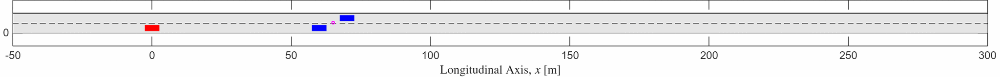

November 2026 · Announcement
The SAMS Lab website is live
Explore our research, meet the team, and follow the latest work in safe autonomy and mobility systems.

The SAMS Laboratory investigates decision-making, learning, optimization, and control for autonomous vehicles and robotic systems.
Learn about our research → Ingram School of Engineering · Texas State University
Ingram School of Engineering · Texas State University
Our home for engineering research
The SAMS Laboratory is part of the Ingram School of Engineering at Texas State University. Here, we bring together autonomy, control, and robotics to help build safer and more capable mobility systems.
Discover Ingram Engineering
 Interactive & Socially Aware Autonomy
Interactive & Socially Aware Autonomy  Safe Intelligence & Control
Safe Intelligence & Control  Networked Air & Robot Mobility
Networked Air & Robot Mobility